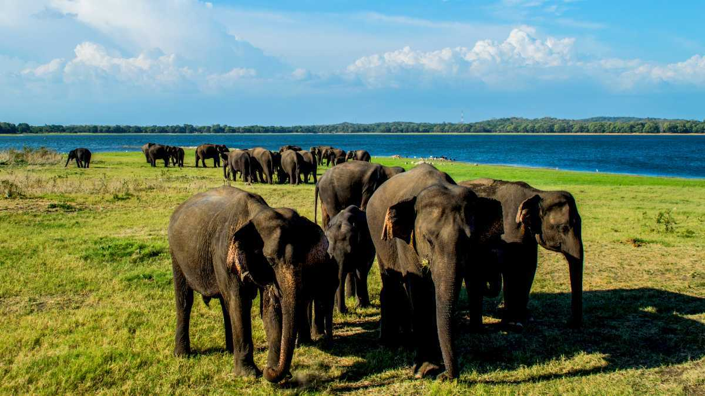
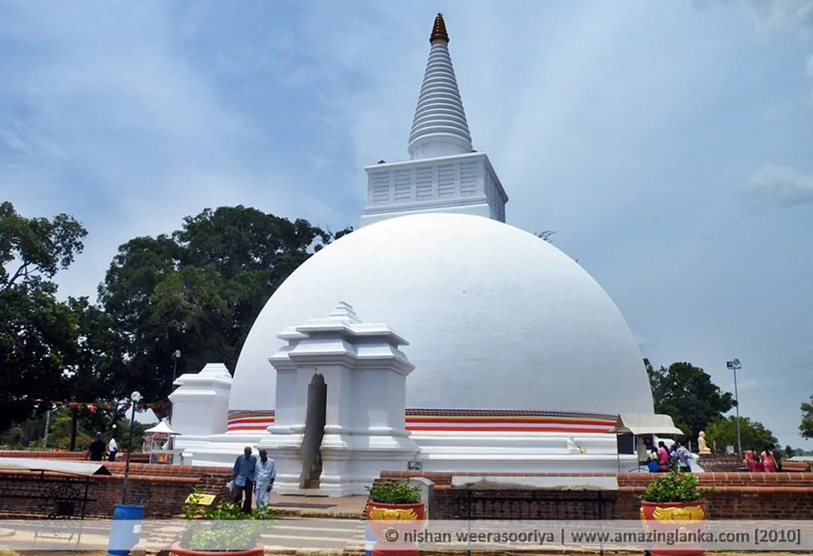

POLONNARUWA VATADAGE

Polonnaruwa Vatadage is a well-preserved Vatadage in the famous Dalada Maluwa quadrangle of the ancient city of ruins, Polonnaruwa. Vatadages are typical Buddhist structures found in Sri Lanka. These are circular, constructed using stone and brick with intricate stone carvings and a wooden roof. They were built to protect stupas. Currently, there are ten Vatadages in Sri Lanka, and the most popular one is Polonnaruwa Vatadage.
MINNERIYA NATIONAL PARK
The Minneriya National Park is in the Northern province of Sri Lanka, four hours away from Colombo, and 30 minutes away from Sigiriya. The national park is famous for its herds of elephants migrating for food, water and shelter, and forming a 'gathering' that can be witnessed by the visitors. The dry season is the best time to visit this place, as the majestic elephants migrate to the Minneriya Tank for water. Apart from elephants, the national park is also home to several mammals, birds, reptiles, and different kinds of plant species. Minneriya National Park comes under the dry zone, meaning, it receives less rainfall compared to the other areas in the country.
SOMAWATHIYA
Somawathiya (Somawathi Chethiya) was built in 2nd century BC and this stupa is said to enshrine the right tooth relic of Lord Buddha. According to chronicles, prince Giri-aba and princess Somawathi (sister of King Kavanthissa) lived on a small community called “Somapura” on the beds of Mahaveli River. Price Giriaba constructed Somawathi Chethiya on the request of his wife who wanted to engage in religious activities. Upon completion of the Stupa, the prince requested a monk named Mahinda for some “dathu” to be kept in the relic chamber of the stupa. Maha Thera Mahinda gave him the right tooth relic of Lord Buddha.
DIMBULAGALA RAJA MAHA VIHARAYA

Dimbulagala Raja Maha Vihara is situated 16 kilometres south east of the ancient city of Polonnaruwa, Sri Lanka. The Dimbulagala range houses a number of caves cut into the rock with Brahmi inscriptions over their drip ledges.